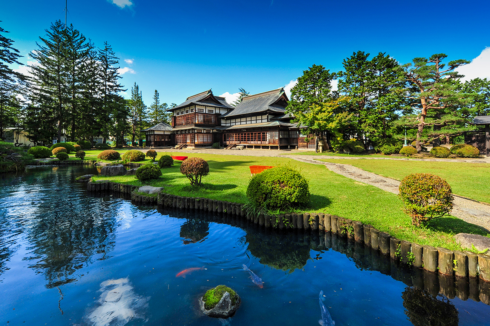
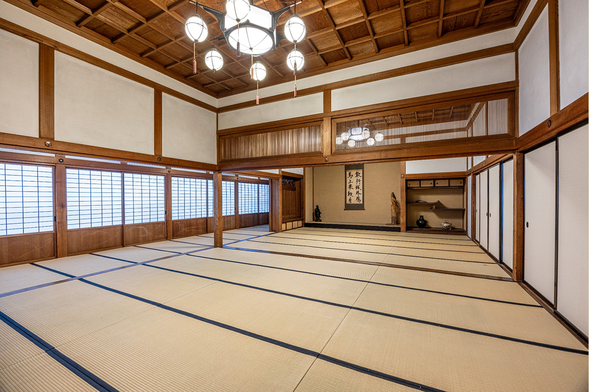
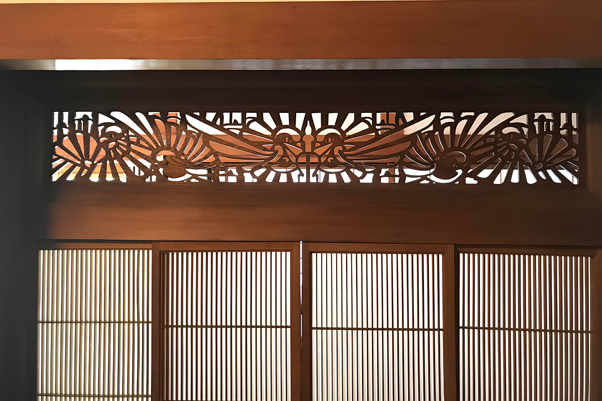

Префектура Ямагата · Ёнэдзава · архитектура
Уэсуги кинэнкан в Ёнэдзаве: графский дом, где японский зал встречается с европейским особняком

На месте второго кольца замка Ёнэдзава стоит дом, который построили для графа Уэсуги в 1925 году. Снаружи он напоминает европейскую виллу, внутри скрывает парадные японские залы, а в его комнатах подают блюда местной кухни.
История
Дом рода Уэсуги
Ёнэдзава лежит на юге префектуры Ямагата, и веками этот город был столицей княжества рода Уэсуги. Первый дом семьи на территории бывшего замка построили в 1896 году как главный дом Мотинори Уэсуги (1844–1919), бывшего князя Ёнэдзавы и главы рода в 14-м поколении. Усадьбу называли «Какумэйкан». В 1919 году она сгорела в большом пожаре, охватившем город.
Новый дом достроили в 1925 году. Именно он сохранился до наших дней вместе с японским садом, разбитым по образцу сада Хама-рикю в Токио. С 1979 года бывшая резиденция открыта для туристов и горожан: здесь подают местную кухню и показывают исторические материалы. Само здание называют Уэсуги кинэнкан, «Мемориальный дом Уэсуги», а ресторан в нём носит имя «Уэсуги хакусякутэй», то есть «Резиденция графа Уэсуги».
Архитектор
Работа для старого друга
Дом спроектировал Сэйитиро Тюдзё (1868–1936), сооснователь одного из крупнейших архитектурных бюро довоенной Японии. Окончив Токийский императорский университет, в 1908 году он вместе с Тацудзо Сонэ (1853–1937) основал бюро «Сонэ Тюдзё». Оно построило множество зданий в западном стиле, среди них старое здание библиотеки университета Кэйо в Токио.
Уэсуги кинэнкан стал редким случаем, когда Тюдзё работал один, без бюро. Причина в личной истории: архитектор родился в Ёнэдзаве, а в молодости учился в Англии вместе с графом Нориаки Уэсуги (1876–1953), главой рода в 15-м поколении. Для него и строился дом.
Интерьер
Японский зал под западной оболочкой
Со стороны сада здание кажется высоким, а стены заметнее крыши, поэтому оно напоминает европейский особняк. Но так было задумано и ради статуса семьи: внутри находятся настоящие парадные залы в стиле сёин-дзукури, традиционной архитектуры самурайских и аристократических домов, с очень высокими потолками.

В нише у токономы большого зала, которую называют цукэ-сёин, над окном устроена резная решётка. На ней изображён герб Уэсуги «бамбук и воробьи», но рисунок переведён на язык европейского модерна. Над дверями самого зала стоят классические решётки из тонких вертикальных планок, а в гостевой комнате орнамент свободнее и изящнее. Лестница на второй этаж тоже японская по духу: доски потолка над ней уложены веером.

Комнаты, как принято в стиле сёин, выстроены вдоль сада уступами, будто клин летящих гусей. Чем дальше от большого зала, тем они уединённее, а самые дальние предназначались для частной жизни семьи. Второй этаж, которого в традиционной схеме нет, добавлен к этой цепочке. В сочетании достоинства старого княжеского рода и уклада дома современного джентльмена и видна рука Тюдзё.
Уэсуги кинэнкан (ресторан «Уэсуги хакусякутэй»)
- Адрес
- префектура Ямагата, Ёнэдзава, Маруноути, 1-3-60
- Телефон
- +81 238-21-5121
- Часы работы
- 11:00–21:00
- Выходные
- среда
- Цены / Вход
- вход бесплатный
- Сайт
- hakusyakutei.jp
Фото: Уэсуги хакусякутэй.